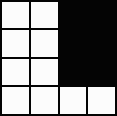
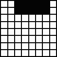
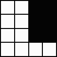
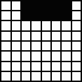

Zadania pierwszego etapu Mazowieckiego Konkursu Informatycznego dla gimnazjalistów LOGIA 02, Logo i algorytmy
Zadanie 1.
Napisz procedurę z jednym parametrem MOTYW :n, która dla danej wartości parametru :n - określającej stopień złożoności rysunku, utworzy na środku ekranu możliwie duży rysunek, podobny do przedstawionych poniżej. Parametr :n może przyjmować wartości od 0 do 8. Skutki polecenia dla wartości 0, 1, 2 oraz 3 możesz zobaczyć na odpowiednich rysunkach:
Zadanie 2.
Napisz procedurę STRZAŁKI, która utworzy na środku ekranu możliwie duży rysunek układu strzałek, taki jak poniżej:
Zadanie 3.
Filharmonia Narodowa w Warszawie - instytucja wielce zasłużona dla polskiej kultury - obchodzi w tym roku jubileusz stulecia istnienia. Napisz procedurę POSADZKA_FN, która tworzy na ekranie możliwie duży rysunek posadzki z holu warszawskiej filharmonii (taki jak poniżej).
Zadanie 4.
Napisz procedurę SIATKA :n :x :y :rd, która tworzy na ekranie możliwie dużą siatkę nxn kwadratów z czarną dziurą.
Węzły - tzn. punkty przecięcia linii siatki - identyfikujemy za pomocą współrzędnych siatkowych. Przyjmujemy, że lewy dolny róg siatki ma współrzędne 0 0, a przeciwległy węzeł w prawym górnym rogu - ma współrzędne n n.
Czarna dziura powinna być kwadratem o lewym dolnym rogu w węźle o danych współrzędnych x oraz y i rozmiarze rdxrd kwadratów jednostkowych - oczek siatki, a w przypadku, gdy taki kwadrat nie mieści się na siatce - jego obcięciem do obszaru siatki.
Poniższy rysunek przedstawia skutki wywołania polecenia SIATKA 6 1 2 3, SIATKA 8 6 5 1, SIATKA 4 2 1 7 oraz SIATKA 8 2 6 5:
 


